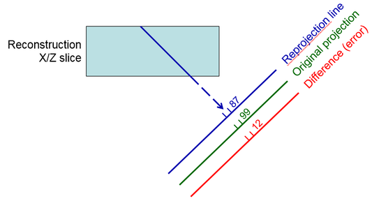
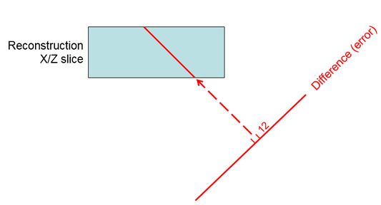
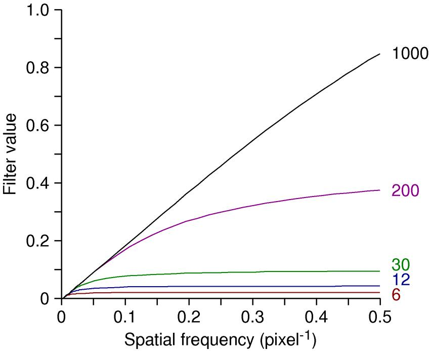

SIRT and SIRT-like Filter Reconstructions
of a Cryo Tilt Series
(IMOD 4.11)
University of Colorado,
Boulder
This example data set illustrates how
to use the interface in Etomo for reconstruction with SIRT (Simultaneous
Iterative Reconstruction Technique). This method involves three steps at
each iteration:
-
Reprojecting from the current estimate of the tomogram by adding
up densities along projection lines through the tomogram (blue ray line in first
diagram)
-
Taking the difference between the original projection data and
this reprojection at each pixel; this difference represents the amount of
error in the current estimate
-
Distributing this difference among the pixels along the ray
contributing to it, essentially adding the error to the tomogram by a
back-projection operation


Because SIRT is relatively
time-consuming and there is no clear point at which to stop iterating, the
strategy is to do a trial reconstruction on a subarea and examine the results
after a selected set of iterations. One can then pick the number of
iterations to use for the full reconstruction, a number that may be suitable for
other similar data sets.
The SIRT-like filter in IMOD provides a fast way to emulate the results from
SIRT. It involves replacing the regular linear ramp for radial weighting
(where the filter value is proportional to the frequency, f), with a curve of the
form f * (1 – (1 – a/f)N). Here a is a
constant and N is an iteration number; in IMOD the value of a
and an adjustment to get N from a given iteration number were worked
out by matching the output of SIRT. The following shows the SIRT-like
filter for different values of N; the linear ramp would be a diagonal
line to the upper right corner.

The example tilt series is of a preparation of bovine papilloma virus (BPV), taken
by Mary Morphew on
an F20 with a US4000 CCD camera at a defocus of -3.5 microns.
Getting and unpacking the data:
-
If you already unpacked the data set for the CTF tutorial, skip to "Enter the
data set directory".
-
Download the sample data set from our web site.
-
Move the data set file "CTF-SIRT-Data.tar.bz2" to the directory where you
want to work on it. Its contents will unpack into a subdirectory named
"ctf-sirt".
-
cd to the directory with the downloaded file
- Enter the command:
imoduntar CTF-SIRT-Data.tar.bz2
or, anywhere except on Windows without Cygwin, you can use
tar -xjf CTF-SIRT-Data.tar.bz2
- Enter the data set directory with:
cd ctf-sirt
Making the aligned stack:
- Start Etomo with the command
etomo bpv_-3_3a.edf
- Open the Final Aligned Stack page.
- If you did not make a CTF corrected stack in the CTF exercise, press Create
Full Aligned Stack.
-
If you have gone through the exercise of finding the defocus with Ctfplotter for
this data set but did not make a CTF corrected stack, you can select the Correct CTF tab, press Correct CTF,
and press Use CTF Correction when done.
-
Press Done to go on to Tomogram Generation.
Making the SIRT reconstruction:
-
Select SIRT.
-
If you have a copy of the data from before December 2020, uncheck Take logarithm of densities with offset and
change the Thickness from 120 to 200.
-
Select Reconstruct subarea.
-
Set the Size in X and Y to 400,300 and the Offset in Y to
-500. The subarea can be offset only in Y through Etomo; offsetting
to a general location is possible but considerably more complicated.
-
Set Iteration #'s to retain to 3,5,8,11,15,20,25 . The reconstruction
program will write out the results at each of these iterations.
-
Select Use GPU if you have a GPU available, and only one GPU for this
step if you have more than one. Otherwise, select the number of CPUs to
use in the parallel processing table.
-
Press Run SIRT.
-
When done, press View Tomograms(s) in 3dmod. This brings up a file
chooser with the available reconstructions. To select all of them, click
in the list and type Ctrl-A.
-
Scroll down to about section 80, the center of the particles. Use the left
and right 4th D arrows or the 1 and 2 hot keys to step between
the different iterations.
Note that the early iterations are dominated by low frequencies and that the
reconstructions become progressively noisier as high frequencies are added in
during later iterations.
-
Pick a number of iterations. If you wanted this reconstruction just for
picking particles, you might use 5 or even 3; otherwise 8 is reasonable.
-
Uncheck Reconstruct subarea and change Iteration #'s to retain to
your selected value.
-
If you are using a GPU, it is useful to select up to 3 if they are available.
If you are using CPUs, you may want to select more at this stage.
-
Press Run SIRT.
-
When done, press View Tomograms(s) in 3dmod. You will still need to
select the file in a file chooser.
-
If you want to apply post-processing to this reconstruction, press Use SIRT
Output File, which will rename it to the standard name for a tomogram at
this step.
Using Filter Trials to Vary the SIRT-like filter
- Select Filter Trials instead of SIRT.
- In the High-Frequency Filter section, set the
Standard Gaussian cutoff to 0.4 to match the filter cutoff
that was used with SIRT.
- Make sure that SIRT-like filter with iterations is selected
and fill in text box with 3,5,8,11,15,20,25 .
- In the Subarea box, to reconstruct the same subarea, set the
Tomogram width in X to 400, height in Y
to 300, and thickness in Z to 200. Set
the Y shift to 500. (As elsewhere in IMOD, a shift has the
opposite sign from an offset because a shift is what is applied to an image area
to bring it to center, whereas an offset refers to how to get from the center to
image area.)
- Each iteration number is done with a separate run or the Tilt program.
Select up to 6 CPUs or GPUs if available.
- Press Run Filter Trials.
- When done, press View Tomograms(s) in 3dmod and select all of the
"slfi" files.
- Notice that the particles have more contrast that in the SIRT reconstructions
for a given iteration number. If you closely compare the SIRT ones to
these, the iteration number has be about 3-4 times higher for the SIRT-like
filter to match the contrast.
- To make a full reconstruction with your chosen iteration number, select the
Back Projection radio button. Select Use
SIRT-like filter equivalent to and fill in the iteration number.
Notice that the cutoff for the Gaussian filter is the same as what you set it to
in the Filter Trials panel - for many parameters, these panels use the same
underlying values. Press Generate Tomogram.
The reason for the contrast discrepancy between SIRT and the SIRT-like filter
is that the contrast of the SIRT reconstruction depends on its thickness.
The scaling of the iteration number
to make an exponent for the SIRT-like filter was initially tuned on this same data set
to match SIRT with thicknesses of 500 pixels. If you remake the SIRT subareas with
a thickness of 400 or 500, you will see that the contrast matches much better for each
iteration number. (You should make the subarea wider if doing a thickness of
500). Apparently, SIRT converges more slowly on the R-weighted
backprojection when the signal in each ray has to be spread over more pixels.
The SIRT-like filter is more predictable because it does not vary with
thickness, but this fact does make it more difficult to transition from using
SIRT to the SIRT-like filter. This discrepancy was discovered just as this
document was being revised for the IMOD 4.11 release. The situation may
well change in an upcoming release.